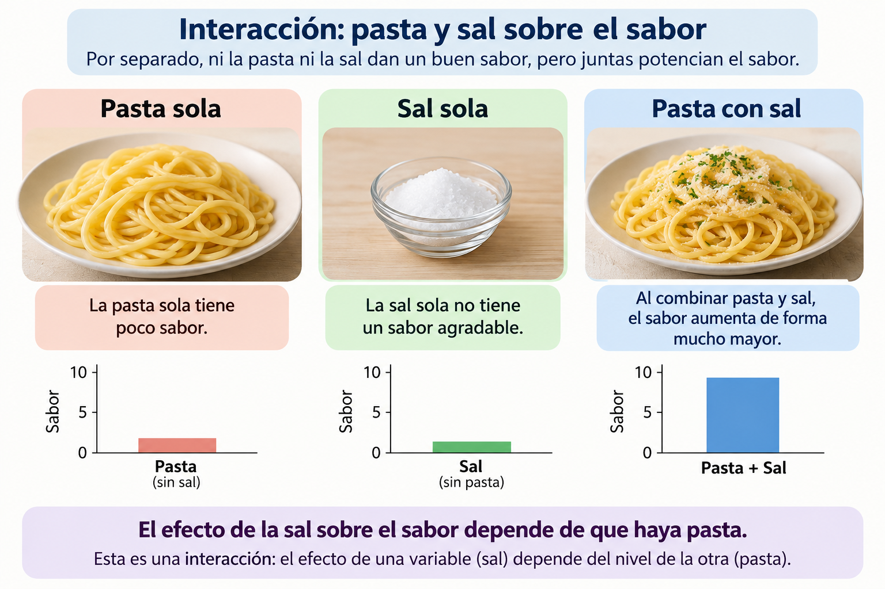
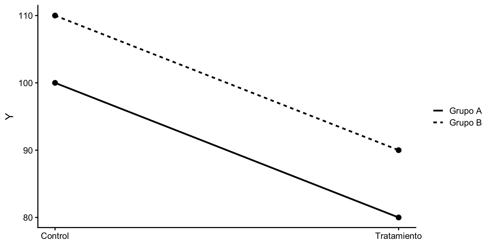
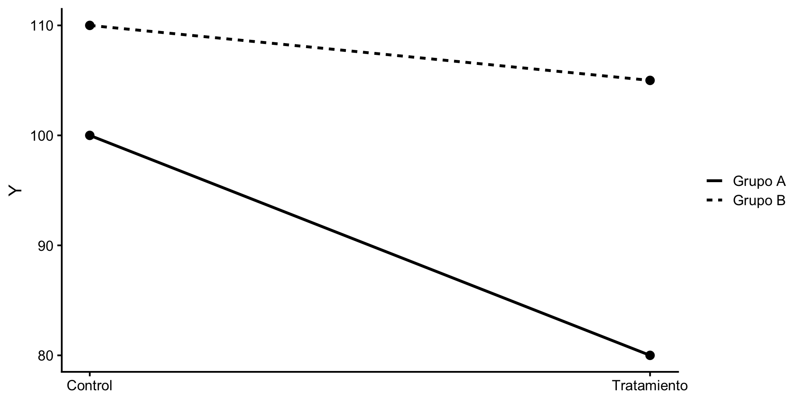
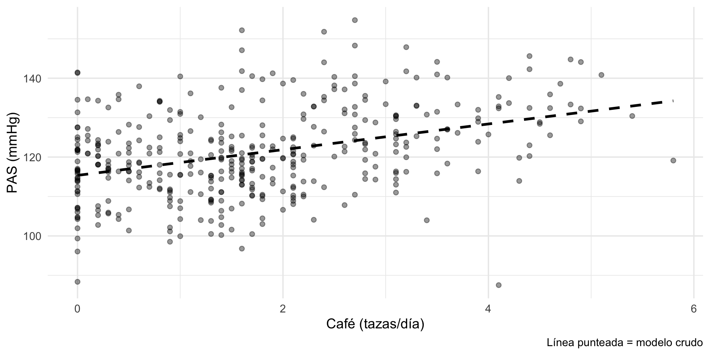
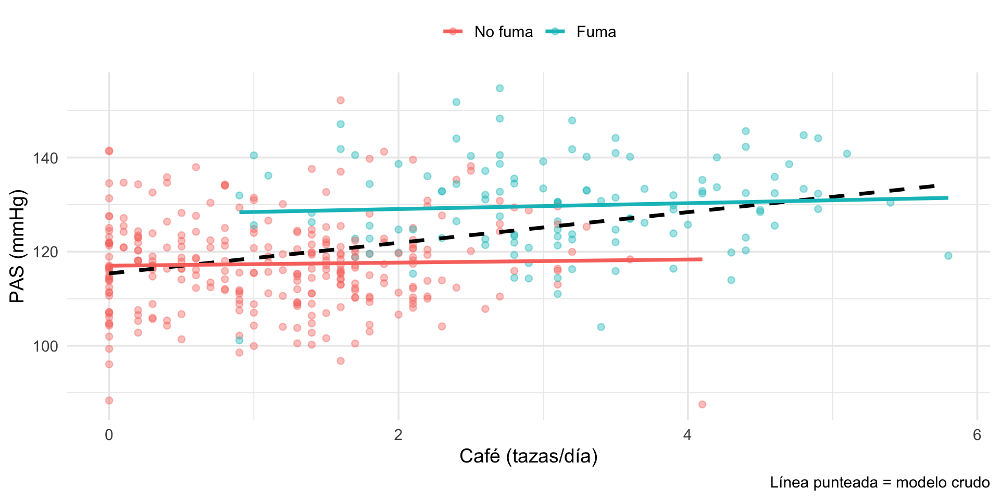
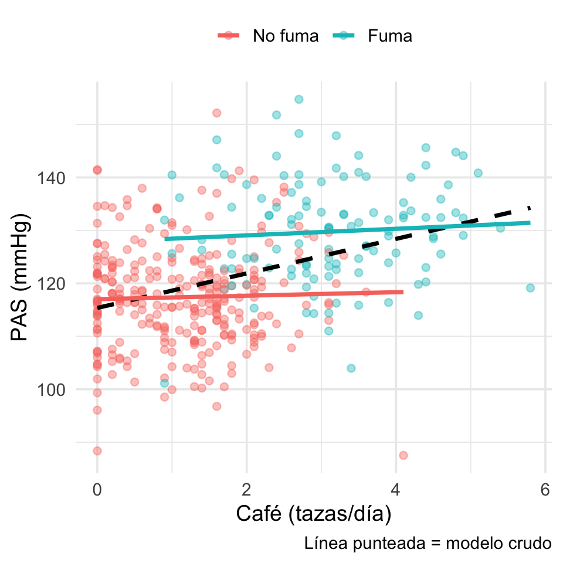
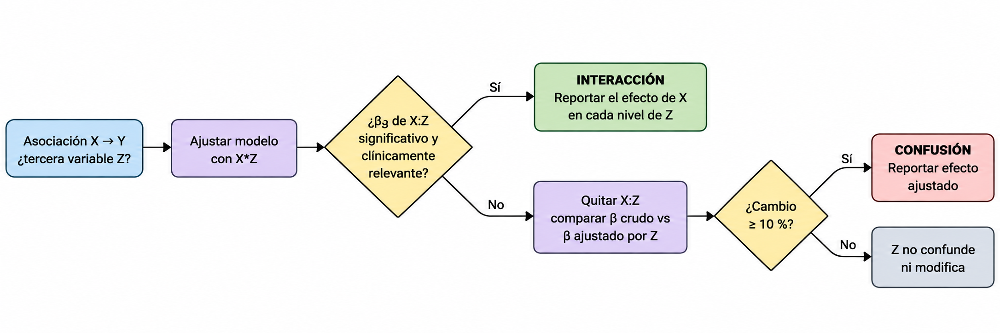
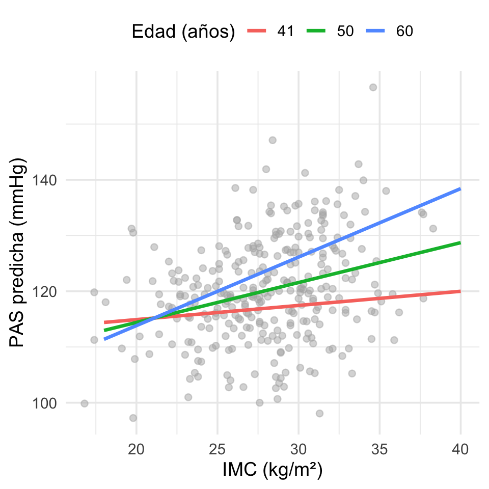
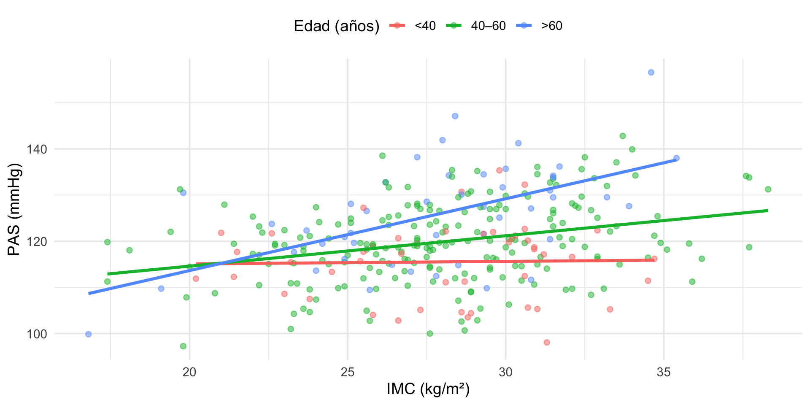

Modelos lineales. Parte 3
Interacciones (modificación de efecto) en regresión lineal múltiple
2026-10-06
Objetivos de aprendizaje
| Bloque | Tema | |
|---|---|---|
| 1 | ¿Qué es una interacción? | |
| 2 | Confusión vs interacción | |
| 3 | ¿Por qué incluirla? ¿Qué pasa si la omito? | |
| 4 | ¿Qué indica una interacción significativa? ¿Cómo evaluarla? | |
| 5 | Efectos, gráficas e interpretación | |
| 6 | Ejercicios de práctica |
Paquetes: ggplot2, emmeans, ggeffects y los datos de MASS (birthwt, Pima.tr).
Recordatorio: el modelo de regresión múltiple
\[Y = \beta_0 + \beta_1X_1 + \beta_2X_2 + \dots + \beta_kX_k + \varepsilon\]
Las \(X\) pueden ser variables básicas o funciones de ellas: \(\ln(X_1)\), \(X_1^2\)… o el producto \(X_1X_2\). Celis plantea, entre los modelos candidatos:
\[Y = \beta_0 + \beta_1X_1 + \beta_2X_2 + \beta_3X_1X_2 + \varepsilon\]
El término \(\beta_3X_1X_2\) es el término de interacción es el tema de hoy.
Supuestos: existencia, independencia, linealidad, homocedasticidad y normalidad siguen aplicando al modelo con interacción.
1. ¿Qué es una interacción?
¿Qué es una interacción?

Definición
Existe interacción cuando el efecto de una variable independiente sobre \(Y\) depende del nivel de otra variable independiente.
Reordenando el modelo:
\[Y = \beta_0 + \beta_2X_2 + \underbrace{(\beta_1 + \beta_3X_2)}_{\text{pendiente de } X_1}X_1 + \varepsilon\]
- Sin interacción (\(\beta_3 = 0\)): la pendiente de \(X_1\) es la misma para cualquier valor de \(X_2\) → líneas paralelas.
- Con interacción (\(\beta_3 \neq 0\)): la pendiente de \(X_1\) cambia con \(X_2\) → líneas no paralelas.
Sinónimos según la disciplina: modificación de efecto (epidemiología), moderación (psicología), heterogeneidad del efecto (ensayos clínicos), G×E / epistasis estadística (genética).
Que intente responder la interacción
¿El efecto de X sobre Y cambia dependiendo de Z?
\[Y = \beta_0 + \beta_1X + \beta_2Z + \beta_3XZ + \varepsilon\]
Aplica para:
Donde X y Z son continuas. El término X:Z es el producto de las variables.
¿Modelo aditivo o interacción?
Modelo aditivo
\[ Y = \beta_0 + \beta_1X + \beta_2Z + \varepsilon \]
Los efectos de \(X\) y \(Z\) se suman.
\[ \text{Efecto de }X = \beta_1 \]
Por lo tanto, el efecto de \(X\) no cambia según el valor de \(Z\).
Pregunta: ¿X y Z contribuyen independientemente a Y?
Modelo con interacción
\[ Y = \beta_0 + \beta_1X + \beta_2Z + \beta_3(XZ) + \varepsilon \]
El efecto de \(X\) ahora depende de \(Z\):
\[ \text{Efecto de }X = \beta_1 + \beta_3Z \]
Si \(\beta_3 \neq 0\), el efecto de \(X\) cambia según Z.
Pregunta: ¿El efecto de X sobre Y depende de Z?
Un ejemplo sencillo
Supongamos que evaluamos el efecto de un tratamiento sobre \(Y\) en dos grupos.
Aditivo
| Grupo | Control | Tratamiento | Efecto |
|---|---|---|---|
| A | 100 | 80 | −20 |
| B | 110 | 90 | −20 |
El tratamiento tiene el mismo efecto:
\[ -20 = -20 \]
Aunque los grupos son diferentes, el efecto del tratamiento no depende del grupo.
\[ Y \sim Tratamiento + Grupo \]
Interacción
| Grupo | Control | Tratamiento | Efecto |
|---|---|---|---|
| A | 100 | 80 | −20 |
| B | 110 | 105 | −5 |
Ahora:
\[ -20 \neq -5 \]
El efecto del tratamiento depende del grupo.
La diferencia de efectos es:
\[ -20-(-5)=\mathbf{-15} \]
\[ Y \sim Tratamiento * Grupo \]
¿Cómo reconocer una interacción?
Sin interacción
Líneas paralelas

El efecto del tratamiento es constante entre grupos.
Con interacción
Líneas no paralelas

El efecto del tratamiento cambia dependiendo del grupo.
Idea clave
Interacción = el efecto de una variable depende del valor o nivel de otra variable.
Las líneas no necesitan cruzarse para que exista interacción.
Interacción algunos ejemplos:
- Farmacología: el efecto de un antihipertensivo sobre la PAS depende de la ingesta de sodio.
- Epidemiología: el efecto de la edad materna sobre el peso al nacer depende del tabaquismo (lo veremos con
birthwt). - Genética (G×E): el efecto de un alelo de riesgo sobre el IMC se atenúa en personas físicamente activas.
- Clínica: el efecto del IMC sobre la PAS es mayor en personas de mayor edad (simulación más adelante).
Nota
La pregunta clave es siempre: ¿el efecto de X es el mismo para todos, o depende de quién es la persona?
2. Confusión vs interacción
Dos fenómenos distintos
| Confusión | Interacción (modificación de efecto) | |
|---|---|---|
| ¿Qué es? | Un sesgo: una tercera variable distorsiona la asociación X–Y | Un fenómeno real: el efecto de X difiere según Z |
| Condición | Z se asocia con X y con Y, y no es intermedia | El efecto de X sobre Y cambia entre niveles de Z |
| ¿Cómo se detecta? | Comparando \(\beta_{crudo}\) vs \(\beta_{ajustado}\) (cambio ≳ 10 %) | Término producto \(X \times Z\) (o estratificando) |
| Estimadores por estrato | Similares entre sí, pero distintos del crudo | Diferentes entre estratos |
| ¿Qué hacer? | Ajustar (incluir Z) y reportar el efecto ajustado | Describir: reportar el efecto de X en cada nivel de Z |
| Objetivo | Eliminarla | Entenderla y reportarla |
Una misma variable puede ser confusora, modificadora, ambas o ninguna. Primero se evalúa la interacción; si no hay, después la confusión.
Confusión: café, tabaquismo y PAS
El consumo de café se asocia con las PAS

Confusión: café, tabaquismo y PAS
El tabaquismo aumenta el consumo de café y la PAS. El café no tiene efecto real.

Confusión: café, tabaquismo y PAS
El tabaquismo aumenta el consumo de café y la PAS. El café no tiene efecto real.
Asi cambian los coeficientes de café en los modelos crudo y ajustado:
crudo.cafe ajustado.cafe
3.2580661 0.4389347 Estimate Std. Error t value Pr(>|t|)
0.2935593 1.0827653 0.2711200 0.7864400 - Crudo ≈ 3.3 mmHg/taza (¡“significativo”!) → ajustado ≈ 0.4: cambio ≫ 10 % → confusión.
- Término
cafe:fumaFumano significativo → no hay interacción.
Así se ve la confusión
ggplot(d_conf, aes(cafe, pas)) +
geom_point(aes(colour = fuma), alpha = 0.4) +
geom_smooth(method = "lm", se = FALSE,
colour = "black", linetype = 2) +
geom_smooth(aes(colour = fuma),
method = "lm", se = FALSE) +
labs(x = "Café (tazas/día)", y = "PAS (mmHg)",
colour = NULL,
caption = "Línea punteada = modelo crudo") +
theme(legend.position = "top")
- Dentro de cada estrato las líneas son planas y paralelas (sin efecto, sin interacción).
- La línea cruda sube solo porque los fumadores toman más café y tienen PAS más alta.
¿Qué hacer con la confusión?
Si el ajuste “elimina” el efecto de X, ¿quitamos Z?
Modelo crudo
\[ Y = \beta_0 + \beta_1X + \varepsilon \]
Supongamos que observamos:
\[ \beta_X = 2.5 \]
Existe una asociación aparente entre \(X\) y \(Y\).
Conclusión cruda:
Al aumentar X, aumenta Y.
El cambio en el efecto de X es precisamente lo que queremos detectar
Si el efecto crudo desaparece después de controlar un confusor verdadero, la interpretación es que la asociación original estaba confundida, no que debamos retirar el ajuste.
¿Por qué Z cambia el efecto de X?
No toda variable que modifica \(\beta_X\) es necesariamente un confusor.
Confusión
\[ Z \rightarrow X \]
\[ Z \rightarrow Y \]
Z explica parte de la asociación observada entre X e Y.
¿Ajustar por Z?
Sí ✓
Aunque:
- \(\beta_X\) disminuya
- \(p_X > 0.05\)
- la asociación desaparezca
Mediación
\[ X \rightarrow Z \rightarrow Y \]
Z se encuentra en la vía causal entre X e Y.
¿Ajustar por Z?
Depende ⚠️
Si buscamos el efecto total de X:
NO
Si buscamos el efecto directo de X:
puede ser necesario.
Interacción
El efecto de X cambia dependiendo de Z:
\[ Y = \beta_0+\beta_1X+\beta_2Z+ \beta_3XZ+\varepsilon \]
\[ \text{Efecto de X} = \beta_1+\beta_3Z \]
¿Incluir Z?
Sí ✓
Pero también debemos incluir:
\[ X\times Z \]
y reportar efectos específicos.
Regla práctica
No elimine una variable porque haga que X pierda significancia.
Primero pregunta qué papel tiene \(Z\):
¿Confusor, mediador o modificador del efecto?
Confusión: helados y ahogamientos
Asociación observada
Durante los meses con mayor venta de helados también se registran más ahogamientos.
\[ \text{Helados} \longrightarrow \text{Ahogamientos} \]
¿Significa que consumir helado aumenta el riesgo de ahogamiento?
No necesariamente
Existe una tercera variable:
\[ \boxed{\text{Temperatura / Verano}} \]
El confusor explica la asociación
\[ \text{Helados} \longleftarrow \boxed{\text{Temperatura}} \longrightarrow \text{Actividades acuáticas} \longrightarrow \text{Ahogamientos} \]
Cuando aumenta la temperatura:
- aumenta el consumo de helados
- aumenta la exposición a actividades acuáticas
Por lo tanto, debemos ajustar por temperatura/temporada para estimar la asociación independiente:
\[ Y = \beta_0 + \beta_1(\text{Helados}) + \beta_2(\text{Temperatura}) + \varepsilon \]
Importante
Si al ajustar por temperatura la asociación entre helados y ahogamientos disminuye o desaparece, esto es compatible con que la asociación cruda estaba confundida.
Confusión: encendedor y cáncer de pulmón
Asociación observada
Un estudio encuentra que las personas que llevan encendedor presentan mayor riesgo de cáncer de pulmón.
\[ \text{Encendedor} \longrightarrow \text{Cáncer} \]
Por ejemplo:
\[ \beta = 2.4,\qquad p < 0.001 \]
¿El encendedor causa cáncer?
No
Falta considerar una variable:
\[ \boxed{\text{Tabaquismo}} \]
El tabaquismo es un confusor
\[ \text{Encendedor} \longleftarrow \boxed{\text{Tabaquismo}} \longrightarrow \text{Cáncer de pulmón} \]
El tabaquismo está relacionado con:
- llevar un encendedor
- desarrollar cáncer de pulmón
Después de ajustar:
\[ Y = \beta_0 + \beta_1(\text{Encendedor}) + \beta_2(\text{Tabaquismo}) + \varepsilon \]
podríamos obtener:
\[ \beta_{\text{Encendedor}} = 0.1,\qquad p=0.74 \]
Importante
No eliminamos tabaquismo porque haga desaparecer el efecto.
Si es un confusor, debe permanecer en el modelo. El objetivo del ajuste es obtener una estimación menos sesgada, no conservar la significancia de \(X\).
Guía de decisión

3. ¿Por qué incluir una interacción? ¿Qué pasa si la omito?
Omitir una interacción real sesga los efectos simples
Si los datos se generan con \(Y=\beta_0+\beta_1X+\beta_2Z+\beta_3XZ+\varepsilon\) y ajustamos solo \(Y \sim X + Z\), Rimpler et al. (2025) muestran que lo que en realidad estimamos es:
\[b_1 = \beta_1 + \beta_3\,\mu_Z \qquad\qquad b_2 = \beta_2 + \beta_3\,\mu_X\]
El efecto “simple” absorbe la interacción multiplicada por la media de la otra variable. Consecuencias:
- El efecto puede inflarse (interacción sinérgica).
- Puede desaparecer (\(b_1 \approx 0\)) aunque \(\beta_1 \neq 0\).
- Puede invertir su signo (interacción antagónica).
Además, los residuales ya no son independientes ni homocedásticos → los valores p del modelo mal especificado no son confiables.
Forma de la interacción (Rimpler et al., 2025)
| Tipo | Signos | Ejemplo en salud | Si la omito… |
|---|---|---|---|
| Sinérgica | \(\beta_1, \beta_2, \beta_3\) mismo signo | Tabaquismo + exposición a asbesto → riesgo pulmonar mayor que la suma | Efectos simples inflados; el modelo simple “funciona” razonablemente |
| Amortiguadora | \(\beta_1\) y \(\beta_2\) con signos opuestos | Estrés laboral (+PAS) amortiguado por actividad física (−PAS) | Sesgo intermedio |
| Antagónica | Efectos simples opuestos a \(\beta_3\) | Dos fármacos que bajan la PA, pero juntos menos que la suma (efecto techo) | Efectos que desaparecen o se invierten → conclusiones erróneas |
Entonces… ¿siempre incluirla? El costo
Rimpler et al. (55 millones de análisis simulados) encontraron:
- El modelo con interacción sobreajusta más la muestra cuando n es pequeño o cuando no hay interacción real.
- Pero, en la población, el modelo correcto (con interacción) casi siempre generaliza mejor cuando la interacción existe.
- El modelo simple solo gana cuando la interacción es nula o sinérgica y n es pequeño.
- Las interacciones suelen ser pequeñas: requieren mucha más muestra que los efectos principales.
Tip
Regla práctica: la decisión de evaluar una interacción debe venir de la teoría / hipótesis biológica, planearse a priori y justificarse.
El modelo ideal
Un modelo ideal debería ser:
Sencillo
Interpretativo
Biológicamente plausible
Incluir confusoras
Incluir interacciones relevantes
4. ¿Qué indica una interacción significativa? ¿Cómo evaluarla?
¿Qué significa que \(\beta_3\) sea significativo?
\(H_0: \beta_3 = 0\) (las pendientes son iguales; líneas paralelas)
\(H_1: \beta_3 \neq 0\) (la pendiente de \(X_1\) cambia con \(X_2\))
Si se rechaza \(H_0\):
- No existe un único efecto de \(X_1\): hay que reportarlo condicionado a \(X_2\).
- Los coeficientes \(\beta_1\) y \(\beta_2\) dejan de ser “efectos principales”: son efectos condicionales cuando la otra variable vale 0.
- Se respeta el principio de jerarquía: si \(X_1X_2\) está en el modelo, \(X_1\) y \(X_2\) también, sean o no significativos.
Significancia estadística ≠ relevancia clínica: evalúe también la magnitud de la diferencia de pendientes y su IC 95 %.
Cómo evaluarla: pasos
- Hipótesis a priori: ¿hay razón biológica para que Z modifique el efecto de X?
- Explorar: gráfico de dispersión por estratos / líneas de regresión por grupo.
- Ajustar el modelo sin y con interacción:
y ~ x + zvsy ~ x * z. - Probar:
- Un solo término → prueba t de \(\beta_3\).
- Varios términos (p. ej. factor con >2 niveles) → prueba F parcial:
anova(m_sin, m_con).
- Complementar: \(R^2\) ajustado, AIC, tamaño de la diferencia de pendientes.
- Diagnóstico del modelo final (residuales, homocedasticidad, influencia).
- Interpretar y graficar efectos condicionales (pendientes simples).
En la fórmula de R: x * z equivale a x + z + x:z; x:z es solo el producto.
Ejemplo con birthwt edad materna × tabaquismo
¿El efecto de la edad materna sobre el peso al nacer (g) depende del tabaquismo?
Estimate Std. Error t value Pr(>|t|)
(Intercept) 2406.058 292.190 8.235 0.000
age 27.731 12.149 2.283 0.024
smoke_fFuma 798.175 484.342 1.648 0.101
age:smoke_fFuma -46.572 20.447 -2.278 0.024Analysis of Variance Table
Model 1: bwt ~ age + smoke_f
Model 2: bwt ~ age * smoke_f
Res.Df RSS Df Sum of Sq F Pr(>F)
1 186 95672288
2 185 93062605 1 2609683 5.1878 0.02389 *
---
Signif. codes: 0 '***' 0.001 '**' 0.01 '*' 0.05 '.' 0.1 ' ' 1\(\beta_3 = -46.6\) g, p = 0.024 → la pendiente de la edad difiere entre fumadoras y no fumadoras.
5. Efectos, gráficas e interpretación
Leer los coeficientes con interacción
\[\widehat{bwt} = 2406.1 + 27.7\,\text{edad} + 798.2\,\text{Fuma} - 46.6\,(\text{edad}\times\text{Fuma})\]
| Coeficiente | Valor | Significado correcto |
|---|---|---|
| Intercepto | 2406 | Peso esperado en no fumadora de 0 años (sin sentido) |
age |
27.7 | Pendiente de la edad en no fumadoras |
smoke_fFuma |
798.2 | Diferencia Fuma − No fuma a los 0 años (¡no es “fumar aumenta el peso”!) |
age:smoke_fFuma |
−46.6 | Diferencia de pendientes (Fuma − No fuma) |
Pendiente en fumadoras = \(27.7 + (-46.6) = -18.8\) g por año.
Advertencia
Interpretar smoke_fFuma = +798 como efecto del tabaquismo es el error más común. Con interacción, ese coeficiente depende de dónde está el 0 de la otra variable.
Interacción: tabaquismo × edad materna
Evaluamos si la asociación entre edad materna y peso al nacer depende del tabaquismo.
\[ bwt = \beta_0 + \beta_1 smoke + \beta_2 age + \beta_3(smoke \times age) + \varepsilon \]
Call:
lm(formula = bwt ~ smoke * age, data = birthwt)
Residuals:
Min 1Q Median 3Q Max
-2189.27 -458.46 51.46 527.26 1521.39
Coefficients:
Estimate Std. Error t value Pr(>|t|)
(Intercept) 2406.06 292.19 8.235 3.18e-14 ***
smoke 798.17 484.34 1.648 0.1011
age 27.73 12.15 2.283 0.0236 *
smoke:age -46.57 20.45 -2.278 0.0239 *
---
Signif. codes: 0 '***' 0.001 '**' 0.01 '*' 0.05 '.' 0.1 ' ' 1
Residual standard error: 709.3 on 185 degrees of freedom
Multiple R-squared: 0.06909, Adjusted R-squared: 0.054
F-statistic: 4.577 on 3 and 185 DF, p-value: 0.004068Interacción: tabaquismo × edad materna
No fumadoras
Cuando \(smoke=0\):
\[ \widehat{bwt}=2406.06+27.73(age) \]
Por tanto:
\[ \boxed{\text{Pendiente}=+27.73\text{ g/año}} \]
Por cada año adicional de edad materna, el peso esperado aumenta 27.7 g.
Fumadoras
Cuando \(smoke=1\):
\[ \widehat{bwt}=3204.23-18.84(age) \]
Por tanto:
\[ \boxed{\text{Pendiente}=-18.84\text{ g/año}} \]
Por cada año adicional de edad materna, el peso esperado disminuye 18.8 g.
¿Dónde está la interacción?
El coeficiente de interacción es:
\[ \boxed{\beta_{smoke:age}=-46.57,\qquad p=0.024} \]
¿Qué significa −46.57?
Es la diferencia entre las pendientes:
\[ -18.84-(27.73)=-46.57 \]
| Grupo | Pendiente |
|---|---|
| No fumadoras | +27.73 g/año |
| Fumadoras | −18.84 g/año |
| Diferencia | −46.57 g/año |
Interpretación
La asociación entre edad materna y peso al nacer depende del tabaquismo.
\[ \boxed{ \text{Efecto de edad} = \beta_{age}+ \beta_{smoke:age}(smoke) } \]
Las pendientes son diferentes:
- No fumadoras: positiva
- Fumadoras: negativa
Por tanto, el modelo no es aditivo.
Interacción
Una interacción significativa no significa simplemente que ambas variables sean importantes.
Significa que el efecto de una variable cambia dependiendo de la otra.
Cuidado con los efectos principales
El modelo estima:
\[ \beta_{smoke}=798.17,\qquad p=0.101 \]
¿Significa que fumar aumenta el peso al nacer en 798 g?
No
Con una interacción:
\[ \text{Efecto de smoke} = \beta_{smoke}+ \beta_{smoke:age}(age) \]
Por tanto:
\[ \text{Efecto de smoke} = 798.17-46.57(age) \]
El coeficiente \(\beta_{smoke}=798.17\) representa el efecto del tabaquismo cuando:
\[ age=0 \]
Una edad sin interpretación práctica.
Solución: centrar la edad
Por ejemplo, a los 25 años:
\[ age_c=age-25 \]
Ahora \(\beta_{smoke}\) representa la diferencia entre fumadoras y no fumadoras a los 25 años:
\[ 798.17-46.57(25) \]
\[ \boxed{\approx -366\text{ g}} \]
¿Qué cambia al centrar?
No cambia la interacción ni el ajuste del modelo.
Cambia el punto de referencia y hace que los efectos principales sean interpretables.
Pendientes simples con IC 95 %: truco de relevel()
El coeficiente de age siempre es la pendiente en la categoría de referencia. Cambiando la referencia obtenemos la pendiente (y su IC) en el otro grupo:
age 2.5 % 97.5 %
No fuma 27.7 3.8 51.7
Fuma -18.8 -51.3 13.6- No fumadoras: +27.7 g por año de edad (IC 95 % 3.8 a 51.7).
- Fumadoras: −18.8 g por año (IC 95 % −51.3 a 13.6).
Centrar para que los coeficientes tengan sentido
Estimate Std. Error t value Pr(>|t|)
(Intercept) 3050.482 66.178 46.095 0.000
age_c 27.731 12.149 2.283 0.024
smoke_fFuma -284.068 105.832 -2.684 0.008
age_c:smoke_fFuma -46.572 20.447 -2.278 0.024smoke_fFumaahora = −284 g: diferencia por tabaquismo a la edad promedio (23 años), p = 0.008.- \(\beta_3\), su EE, su p y el \(R^2\) no cambian.
- Centrar no “arregla” la colinealidad de la interacción (no la necesita): solo mejora la interpretación (Rimpler et al., 2025).
Gráfica: categórica × continua

- Líneas no paralelas que se cruzan → interacción cualitativa (cruzada).
- Con un factor de 2 niveles,
geom_smooth()por grupo traza las mismas rectas que el modelobwt ~ age * smoke_f. - Note la poca precisión en edades extremas: no extrapolar.
Diagnóstico del modelo con interacción
El modelo con interacción sigue siendo un modelo lineal: los supuestos de Celis se verifican igual.
Cómo reportar una interacción
“Se observó una interacción entre la edad materna y el tabaquismo sobre el peso al nacer (\(\beta_3 = -46.6\) g; IC 95 % −86.9 a −6.2; p = 0.024). En las no fumadoras, cada año adicional de edad se asoció con un aumento de 27.7 g (IC 95 % 3.8 a 51.7), mientras que en las fumadoras la asociación fue negativa y no significativa (−18.8 g; IC 95 % −51.3 a 13.6). A la edad promedio (23 años), los hijos de fumadoras pesaron 284 g menos (p = 0.008).”
Elementos: (1) existencia de la interacción con IC; (2) efecto de X en cada nivel de Z; (3) efecto de Z en un valor con sentido de X; (4) gráfica.
Errores comunes
- ❌ Interpretar \(\beta_1\) o \(\beta_2\) como “efectos principales” cuando hay interacción.
- ❌ Quitar \(X_1\) o \(X_2\) porque “no son significativos” (viola la jerarquía).
- ❌ Centrar “para eliminar la colinealidad” y creer que cambió la interacción.
- ❌ Probar todas las interacciones posibles sin hipótesis (falsos positivos, sobreajuste).
- ❌ Concluir “no hay interacción” con n pequeño (poco poder ≠ ausencia de efecto).
- ❌ Confundir confusión con interacción: la confusión se ajusta, la interacción se describe.
- ❌ Extrapolar las pendientes simples fuera del rango observado.
6. Ejercicios de práctica
Ejercicio 1 — Pima.tr: edad × diabetes sobre la presión diastólica
- Grafique
bpvsagecon una recta portype. ¿Las rectas son paralelas?
- Ajuste
bp ~ age + typeybp ~ age * type. Compárelos conanova().
- Interprete cada coeficiente del modelo con interacción. ¿Qué significa el coeficiente de
typeYes?
- Calcule la pendiente de la edad en cada grupo (con IC 95 %) usando
relevel().
- Centre
agey vuelva a ajustar. ¿Qué cambió y qué no?
- Redacte un párrafo de resultados.
Ejercicio 2 — birthwt: peso materno × tabaquismo
- Ajuste
bwt ~ lwt * smoke_f(lwt= peso materno en libras).
- ¿La interacción es significativa? ¿Qué decisión toma sobre el modelo final?
- Si retira la interacción, ¿cómo interpreta ahora el coeficiente de
smoke_f?
- Haga la gráfica de rectas por grupo. ¿Coincide con su conclusión?
Ejercicio 3 — Datos Bio3_24a (Celis, cuadro 24-1)
- Ajuste los modelos de Celis \(Y \sim X_1 + X_2\) y \(Y \sim X_1 + X_2 + X_1X_2\).
- ¿El término de interacción mejora el modelo (prueba F parcial, \(R^2\) ajustado)?
- Con n = 11, ¿qué puede y qué no puede concluir sobre la ausencia de interacción?
Ejercicio 4 — ¿Confusión o interacción?
set.seed(42); n <- 300
# Base A
sexo <- rbinom(n, 1, 0.5)
act <- pmax(0, round(3 + 2*sexo + rnorm(n, 0, 1.5), 1)) # actividad física (h/sem)
ldl <- 120 + 20*sexo - 2*act + rnorm(n, 0, 12)
base_A <- data.frame(ldl, act, sexo = factor(sexo, labels = c("Mujer", "Hombre")))
# Base B
sexo <- rbinom(n, 1, 0.5)
act <- pmax(0, round(4 + rnorm(n, 0, 1.5), 1))
ldl <- 130 - 4*act*(1 - sexo) + rnorm(n, 0, 12)
base_B <- data.frame(ldl, act, sexo = factor(sexo, labels = c("Mujer", "Hombre")))Para cada base: ajuste ldl ~ act, ldl ~ act + sexo y ldl ~ act * sexo; grafique por sexo y use la guía de decisión para clasificar el papel del sexo. ¿Qué ocurre con el signo del efecto crudo en la base A?
7. Interacciones con variables cuantitativas
¿La asociación entre IMC y glucosa depende de la edad?
Vamos a utilizar la base Pima.tr de MASS para evaluar si la asociación entre IMC y glucosa depende de la edad.
A diferencia de los que veíamos en los ejercicios anteriores, aquí ambas variables son cuantitativas. Por lo tanto hay una pendiente de BMI diferente para cada edad. La interpretación de los coeficientes es la misma que antes: el efecto de IMC sobre glucosa depende de la edad.
¿La asociación entre IMC y glucosa depende de la edad?
No
Call:
lm(formula = glu ~ bmi * age, data = Pima.tr)
Residuals:
Min 1Q Median 3Q Max
-76.548 -17.120 -2.939 18.058 83.212
Coefficients:
Estimate Std. Error t value Pr(>|t|)
(Intercept) 30.08322 37.12917 0.810 0.4188
bmi 2.01133 1.16216 1.731 0.0851 .
age 2.12058 1.21214 1.749 0.0818 .
bmi:age -0.03746 0.03748 -0.999 0.3188
---
Signif. codes: 0 '***' 0.001 '**' 0.01 '*' 0.05 '.' 0.1 ' ' 1
Residual standard error: 29.38 on 196 degrees of freedom
Multiple R-squared: 0.1522, Adjusted R-squared: 0.1392
F-statistic: 11.73 on 3 and 196 DF, p-value: 4.232e-07Analysis of Variance Table
Model 1: glu ~ bmi + age
Model 2: glu ~ bmi * age
Res.Df RSS Df Sum of Sq F Pr(>F)
1 197 170053
2 196 169191 1 862.15 0.9988 0.3188Continua × continua: PAS ~ edad × IMC
El efecto del IMC sobre la PAS aumenta con la edad (interacción sinérgica):
Estimate Std. Error t value Pr(>|t|)
(Intercept) 154.239 19.779 7.798 0.000
edad -1.083 0.383 -2.828 0.005
imc -1.850 0.708 -2.614 0.009
edad:imc 0.051 0.014 3.732 0.000Continua × continua: PAS ~ edad × IMC
Nuestra ecuación es:
\[ PAS = \beta_0 + \beta_1 \text{edad} + \beta_2 \text{IMC} + \beta_3 (\text{edad} \times \text{IMC}) + \varepsilon \]
\[ PAS = 154.23 - 1.083 \text{edad} -1.850\text{IMC} + 0.051 (\text{edad} \times \text{IMC}) + \varepsilon \]
- ¿IMC con efecto negativo (−1.85)? No: es la pendiente del IMC a los 0 años de edad. La pendiente es negativa. Centrar lo resuelve.
- ¿Edad con efecto negativo (−1.083)? No: es la pendiente del Edad con 0 de IMC. La pendiente es negativa. Centrar lo resuelve
- \(\beta_3 = 0.051\): por cada año extra de edad, la pendiente del IMC aumenta 0.051 mmHg por kg/m². Representa cuánto cambia la pendiente del IMC por cada año adicional de edad.
Tip
\[\boxed{ \text{Interacción continua × continua: } \beta_3=\text{cambio en una pendiente por cada unidad de la otra variable} }\]
Centrado en continua × continua
Para cada \(X_i\) se resta su media: \(X_{i,c}=X_i-\bar{X_i}\). Esto hace que los efectos principales sean interpretables:
Estimate Std. Error t value Pr(>|t|)
(Intercept) 120.273 0.480 250.793 0
edad_c 0.356 0.051 6.968 0
imc_c 0.733 0.122 6.029 0
edad_c:imc_c 0.051 0.014 3.732 0r_sin_centrar r_centrado
0.77 -0.12 imc_c= 0.73 mmHg por kg/m² a la edad promedio;edad_c= 0.36 mmHg/año con IMC promedio.- \(\beta_3 = 0.051\): por cada año extra de edad, la pendiente del IMC aumenta 0.051 mmHg por kg/m².
Gráfica: pendientes simples (edad a −1 DE, media, +1 DE)
# Media y DE de la edad
m_e <- mean(d_pas$edad); s_e <- sd(d_pas$edad)
# expan.grid crea un data frame con todas las combinaciones posibles de los vectores que le pasemos.
rejilla <- expand.grid(
imc = seq(18, 40, by = 0.5), # Sequencia de valores de IMC
edad = round(c(m_e - s_e, m_e, m_e + s_e))) # Sequencia de valores de edad (media y ±1 DE)
rejilla$pred <- predict(m_pas, newdata = rejilla) # Calula el valor de PAS para cada combinación de IMC y edad
ggplot(rejilla, aes(imc, pred,
colour = factor(edad))) +
geom_point(data = d_pas, aes(imc, pas),
colour = "grey70", alpha = 0.5) +
geom_line(linewidth = 1.2) +
labs(x = "IMC (kg/m²)", y = "PAS predicha (mmHg)",
colour = "Edad (años)") +
theme(legend.position = "top")
Pendiente del IMC en cada edad: \(\beta_{imc} + \beta_3 \times \text{edad}\).
Otra opcion es cortar la variable

Otra opcion
Otra opcion
8. Ejercicios de interaccioes con variables cuantitativas
Pima: pliegue cutáneo × edad sobre el IMC
Utilizano la base de datos Pima.tr de MASS, evalúe si la asociación entre pliegue cutáneo y IMC depende de la edad. Grafice, ajuste el modelo con y sin interacción, interprete los coeficientes y reporte los efectos condicionales. Centre si es necesario para que los efectos principales tengan sentido.
Sodio × edad sobre la PAS (ajustando por IMC)
Simule los siguientes datos:
set.seed(2024)
n <- 400
edad <- round(pmin(80, pmax(25, rnorm(n, 50, 12))))
imc <- round(rnorm(n, 28, 4), 1)
sodio <- round(pmax(0.5, 3.5 + 0.08*(imc - 28) + rnorm(n, 0, 1)), 2)
pas <- 125 + 0.5*(edad - 50) + 0.6*(imc - 28) + 2*(sodio - 3.5) +
0.12*(sodio - 3.5)*(edad - 50) + rnorm(n, 0, 10)
d_na <- data.frame(pas = round(pas), sodio, edad, imc)Posteriormente responda: si el efecto del sodio sobre la PAS depende de la edad, ¿cómo cambia la pendiente del sodio por cada año adicional de edad?
9. Resumen y conclusiones
Resumen
- Interacción = el efecto de X depende de Z; matemáticamente, pendiente de \(X_1\) = \(\beta_1 + \beta_3X_2\).
- Confusión es un sesgo que se ajusta; interacción es un hallazgo que se describe por estratos.
- Omitir una interacción real puede anular o invertir efectos verdaderos (sobre todo si es antagónica).
- Con interacción, \(\beta_1\) y \(\beta_2\) son efectos condicionales (en 0 de la otra variable): centre para interpretarlos.
- Evalúe con t de \(\beta_3\) o F parcial, respete la jerarquía, grafique pendientes simples y reporte efectos por nivel.
- La decisión de incluirla nace de la teoría, no de la búsqueda de significancia.
Referencias
- Celis de la Rosa, A. J., & Labrada Martagón, V. (2014). Bioestadística (3ª ed.). Editorial El Manual Moderno. Caps. 23 (Regresión y correlación simple) y 24 (Regresión y correlación múltiple).
- Denis, D. J. (2020). Univariate, Bivariate, and Multivariate Statistics Using R, cap. 7. Wiley.
- Rimpler, A., Kiers, H. A. L., & van Ravenzwaaij, D. (2025). To interact or not to interact: The pros and cons of including interactions in linear regression models. Behavior Research Methods, 57, 92. https://doi.org/10.3758/s13428-025-02613-6
- Penn State Eberly College of Science. STAT 462: Applied Regression Analysis, 7.6 Interactions Between Quantitative Predictors. https://online.stat.psu.edu/stat462/node/157/
- Hosmer, D. W., & Lemeshow, S. (1989). Applied Logistic Regression. Wiley (origen de
birthwt). Venables & Ripley (2002), MASS.
Bioestadística Avanzada · Modelos lineales. Parte 3. Interacciones.